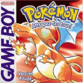

Pokémon Version Rouge
Pokémon version Rouge est un des tout premiers jeu de la franchise Pokémon à avoir débarqué sur notre continent en 1999.
Let's sing
Génération 1(1996-1999)
Pokémon est sorti pour la première fois en 1996 au Japon avec les versions Rouge et Verte. Depuis, l'univers a évolué jusqu'à maintenant, des dizaines de jeux et applications sont sortis, que vous retrouvez ici.
Pokémon version Rouge est un des tout premiers jeu de la franchise Pokémon à avoir débarqué sur notre continent en 1999.
Pokémon version Bleue est un des tout premiers jeu de la franchise Pokémon à avoir débarqué sur notre continent en 1999.
Pokémon version Verte est un des tout premiers jeu de la franchise Pokémon sorti au Japon en 1996.
Pokémon version Jaune est une réédition des versions Rouge et Bleue arrivée en France en 2000.
Pokémon Trading Card Game est un jeu de collection de cartes Pokémon arrivée en France en 2000.
Pokémon Pinball est un jeu vidéo de flipper arrivée en France en 2000.
Pokémon Card GB2 est un jeu de collection de cartes Pokémon sorti au Japon en 2001.
Pokémon Stadium "0" est le premier jeu de la série Stadium et est sorti au Japon en 1998.
Pokémon Stadium est le second jeu de la série Stadium et est arrivée en France en 2000.
Pokémon Snap est un jeu vidéo de la série Pokémon sorti au Japon en mars 1999.
Pokémon Puzzle League est un jeu vidéo de puzzle sorti en 2000 sur Nintendo 64.

Hey You, Pikachu! est un jeu vidéo de la première génération pour la Nintendo 64, sorti uniquement au Japon en 1998